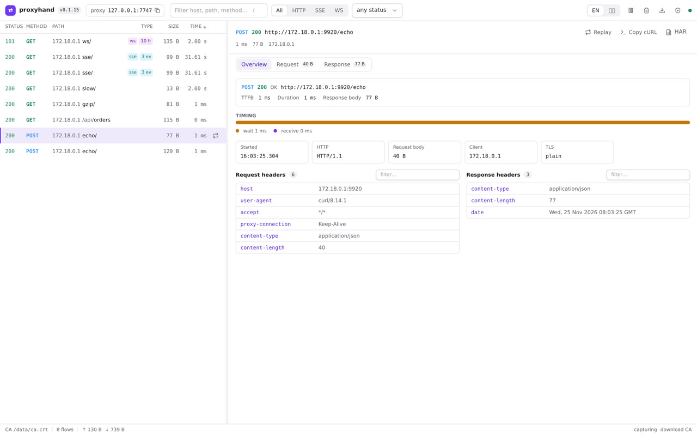
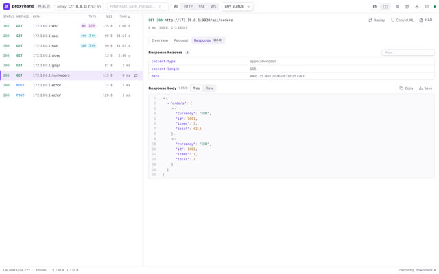

Live SSE & WebSocket
Events and frames stream in the instant they arrive — event names, retry, comments, opcodes, both directions interleaved. Not one buffered blob, and the live feed pings itself so it never drifts off.
proxyhand is an HTTP, HTTPS, SSE and WebSocket interception proxy in a single static binary. It mints certificates on the fly and shows every event and frame the moment it arrives — not after a buffered blob.

No accounts, no cloud, no plugins. It runs on your machine and shows you the traffic — including the parts most proxies buffer away.
Events and frames stream in the instant they arrive — event names, retry, comments, opcodes, both directions interleaved. Not one buffered blob, and the live feed pings itself so it never drifts off.
Plain HTTP, HTTPS via CONNECT + MITM, and the web UI all share a single port. Open the inspector on the very port you proxy on.
An ECDSA root CA and per-SNI leaf certs minted on demand. The shield button shows per-platform trust steps and the CA's SHA-256 fingerprint, so you can spot a stale or wrong copy.
One click from the list. Edit method, URL, headers and body in a Postman-style composer — JSON formatted, forms as a field table — and send it back through the same TLS path.
A line-numbered JSON tree, form field tables, inline image previews, gzip/br/deflate decoded on the fly, binary downloadable, truncation flagged.
Export one flow or everything as HAR 1.2 with decoded bodies; copy any request as a cURL command. Pause and clear capture without killing the streams that are still alive.
A keyboard-first interface for the traffic you actually debug — SSE, WebSocket, JSON, forms and headers, side by side.




Prebuilt binaries for every platform, static Linux builds, Docker, or build from source.
$ curl -LO https://github.com/xiegoudan/proxyhand/releases/latest/download/proxyhand-amd64-linux
$ chmod +x proxyhand-amd64-linux
$ sudo mv proxyhand-amd64-linux /usr/local/bin/proxyhandPrebuilt assets: proxyhand-amd64|arm64-linux · .exe for Windows x64 / ARM · .deb · .rpm · macOS (Intel & Apple silicon). Linux builds are static — they run on Alpine too.
$ docker run --rm -p 8899:7747 -v proxyhand_data:/data xiegoudan/proxyhand:latestThe container listens on 7747; publish any host port. The root CA lives on the volume, so trusted clients keep working across upgrades.
$ cargo install --git https://github.com/xiegoudan/proxyhand
$ proxyhand # proxy + UI on http://127.0.0.1:7747The web UI is embedded in the binary, so there is nothing else to run.
certutil -addstore -f "ROOT" ca.crt (Windows) ·
update-ca-certificates (Debian) · the shield button in the UI has the full table.